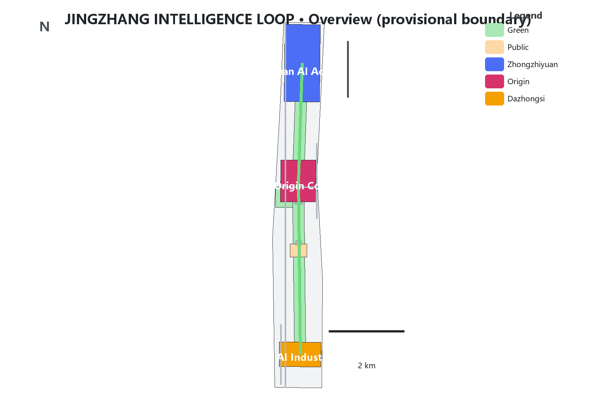
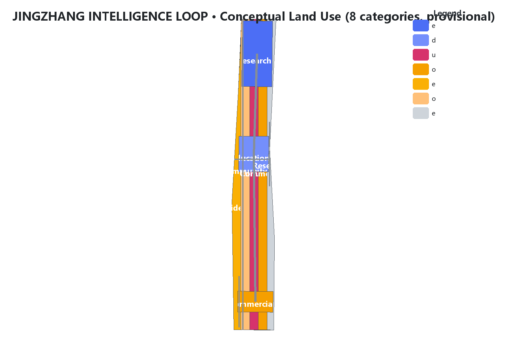
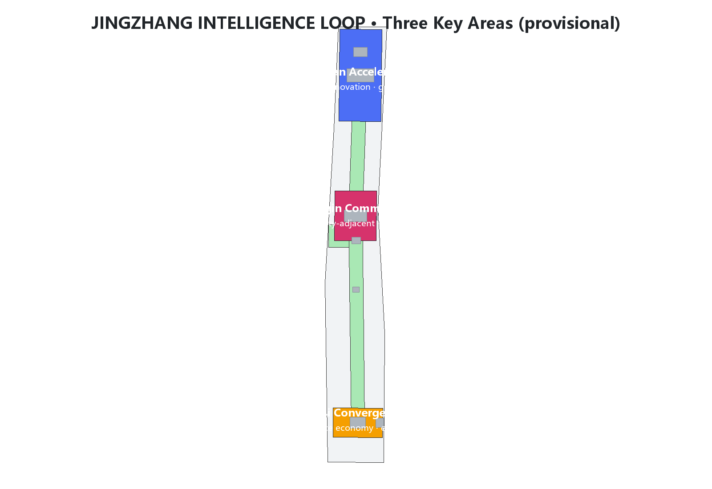
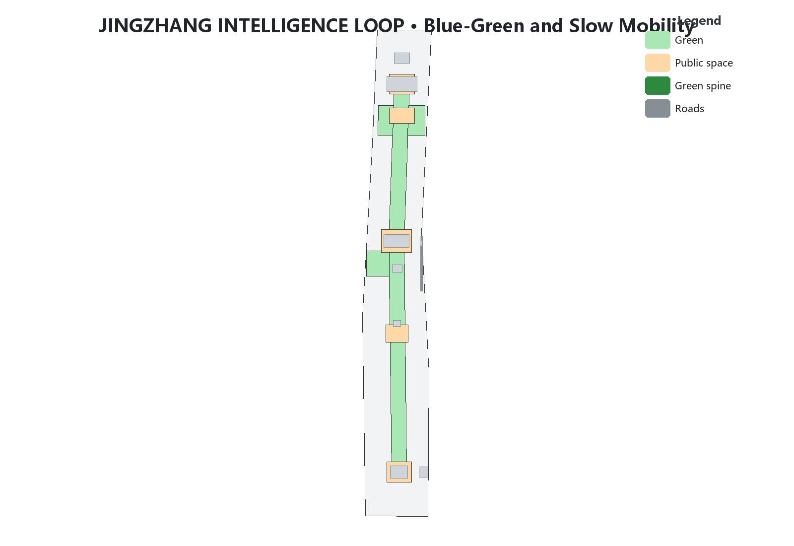
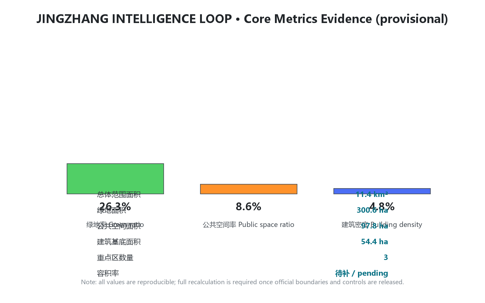

JINGZHANG INTELLIGENCE LOOP — From a Century-Old Railway to an AI Innovation Loop: Conceptual Urban Design for the Centennial Jing-Zhang AI Innovation Belt
Organized around the Jing-Zhang Railway Heritage Park as a cultural-ecological spine, the Zhongzhiyuan, AI Origin Community and Dazhongsi areas as three cores, and Zhongguancun and Xiaoyuehe as two wings, the proposal forms an 'One Spine, Three Cores, Two Wings, Five Loops' AI innovation loop. All spatial proposals are conceptual, based on provisional boundaries and subject to recalculation when official data is released.
JINGZHANG INTELLIGENCE LOOP — From a Century-Old Railway to an AI Innovation Loop
Nature of the proposal: a conceptual design reference for the open call. All spatial proposals are conceptual suggestions, reference schemes, or materials for professional teams to study further; they do not replace formal planning or constitute government-approved conclusions Source Source. This package uses the organizer-provided provisional boundaries; once official boundaries are published, all related layers and metrics must be recalculated Source Depth.
Design Basis and Source List
This proposal takes the Beijing Municipal Commission of Planning and Natural Resources Haidian Sub-bureau's Pre-qualification Announcement for the International Open Call on Urban Design of the Centennial Jing-Zhang AI Innovation Belt as its primary basis, the agent-facing taskbook as its co-creation task basis, and the registered three scope levels, three key areas, enums, indicators, source list and provisional boundaries in brief/site-package/ as its machine-readable basis Source Source Source. Before generation, design_brief.json, allowed_design_space.json, sources.json, enums/, ranges/planning_limits.json, schemas/ and data/processed/agent_fact_pack.md were read, and project_scope_summary.csv, agent_task_requirements.csv, source_use_matrix.csv and missing_data_checklist.csv were used to build a task–scope–source–gap checklist Source Depth.
Source-use boundaries are as follows Source:
| Source type | Permitted use | Forbidden use |
|---|---|---|
| Official announcement and public data | Task basis, area and extent textual basis, design discussion | Precise boundaries, approvals, or implementation commitments |
| Provisional boundaries | Proposal generation, visualization, intake self-check, non-statutory design discussion | Official redlines, approval basis, precise areas, or formal scoring basis |
| Regulatory planning controls | Explicitly marked as pending data | Fabricating FAR, height, density, green ratio or other approved conclusions |
| Background materials | Conceptual inspiration | Upgrading to official facts or data conclusions |
Areas, extents and geometry status of the three scope levels and three key areas all come from the announcement and provisional boundary registry Spatial data Metric. This proposal introduces no non-public drawings, non-public spatial data, internal control indicators, or personal privacy information; every citation can be traced in sources.json Source Depth.

Three-Level Scope Framework
The proposal is organized by the three official scope levels and develops an "One Spine, Three Cores, Two Wings" overall structure with a "Five Loops" coordination mechanism across all levels Source Depth:
- Coordinated Research Area (approx. 43.6 km²): studies the AI industry ecosystem, future urban forms and regional coordination, answering "where the innovation belt should go" Spatial data.
- Overall Design Area (approx. 11.4 km²): implements the urban renewal framework and regulatory-plan-depth urban design, answering "how the belt is organized and renewed" Spatial data.
- Key Detailed Design Area (approx. 3.68 km²): delivers fine-grained design for the Zhongzhiyuan, AI Origin Community and Dazhongsi cores, answering "where scenarios land" Spatial data Metric.
All three levels use provisional boundaries; once official polygons are published, the related layers and metrics must be recalculated Source Depth.
Coordinated Research Area: Industry and Future City Research
Design judgment: translate "Jing-Zhang speed" into "the speed of self-reliant innovation in the AI era", and restructure the railway "line" into an "intelligence loop" for the flow of AI factors. The Jing-Zhang Railway was China's first trunk railway designed and built independently — a historical origin of self-reliant innovation. The AI innovation belt should inherit this DNA and become a "learnable, evolvable, verifiable" urban operating system Source Standard Depth.
Global innovation-ecosystem lessons (mechanisms only; no fabricated figures) Source Depth:
| Case | Transferable mechanism | Local translation |
|---|---|---|
| Silicon Valley (USA) | Venture capital–talent–enterprise cycle | Relay chain of AI Origin incubation → Zhongzhiyuan acceleration → Dazhongsi showcase |
| Kendall Square, Boston | University-adjacent innovation district, small streets | University-adjacent blocks and slow-mobility stitching in the AI Origin Community |
| Shenzhen Bay Science Park | One-stop industrial services and public interfaces | Public service network of the enterprise services wing |
| One-North, Singapore | Industry-city integration and park city | Heritage park vitality belt and garden-type blocks |
| Hangzhou Future Sci-Tech City | Open scenarios and pilot-first policy | Low-speed pilots and scenario opening on the Xiaoyuehe wing |
| Zhongguancun Science City | Global innovation resource network | Global factor allocation via the Zhongguancun services wing |
AI innovation ecosystem map is organized around five functions: AI full-stack self-reliant innovation system, world-class AI innovation ecosystem, a new paradigm of AI+ scenario empowerment, an intelligent and vibrant AI city, and global discourse on AI governance Source Depth.
The "Five Loops" coordination mechanism is the core of this proposal — restructuring the belt into a circulating innovation closed loop Standard Depth:
1. Innovation ecosystem loop: talent → incubation → acceleration → showcase → capital return, linking the AI Origin Community, Zhongzhiyuan and Dazhongsi. 2. Data factor loop: open-source code base, edge-compute hubs and compliant data circulation nodes form an auditable data loop. 3. Scenario empowerment loop: 10+ scenario cards, 3 test-verification scenarios and 5+ personas are located along the belt to form a "test–feedback–iterate" loop. 4. Public vitality loop: the heritage park spine, waterfront greenways and community pocket parks form a public life circuit. 5. Governance loop: safety evaluation, model red-teaming, public participation and human review form the urban-agent governance circuit.
Overall Design Area: Urban Renewal and Regulatory-Plan-Level Urban Design
Spatial structure: "One Spine, Three Cores, Two Wings." The spine is the Jing-Zhang Railway Heritage Park cultural-ecological corridor, stitching east and west, connecting north and south, and carrying cultural narrative and public life; the three cores are the Zhongzhiyuan AI Self-Reliant Innovation Acceleration Area, the Beijing AI Origin Community and the Dazhongsi AI Industry Cluster; the two wings are the Zhongguancun Technology Services Wing and the Xiaoyuehe Scenario Empowerment Wing Source Depth Spatial data.
Land use proposes eight dominant categories at regulatory-plan depth: research (0802), education (0804), culture (0803), commercial services (05), residential (0701), community services (0702), park green space (1401) and reserved land (16) Standard Depth Spatial data. These categories express a conceptual structure only and change no ownership or statutory use.
Development intensity and building height: until official regulatory conditions are published, this proposal sets no approved values for FAR, building height or density; it only suggests conceptual principles of "moderate along the spine sides, concentrated in cores, low-disturbance in residential areas" Depth Source. Intensity indicators are recorded as unknown in assumptions.json and metrics.json, pending completion of ranges/planning_limits.json and recalculation Metric Depth.
Urban renewal framework follows "preserve first, low-disturbance renewal, staged implementation": protected heritage and quality public buildings are preserved; general buildings mainly undergo functional replacement and public-interface activation; conceptual renewal is proposed only on potential parcels evidenced in public materials Standard Depth. All retain-renovate-demolish judgments are conceptual and involve no ownership or approval conclusions Source.

Detailed Design of Key Areas
The three key areas form the spatial version of a "train–verify–deploy" AI industry closed loop Source Depth Spatial data:
1. Zhongzhiyuan AI Self-Reliant Innovation Acceleration Area (approx. 192.1 ha) — "Acceleration Core" Positioned as the AI full-stack self-reliant innovation system and global discourse on AI governance Source. Strategy: build a garden-type AI innovation district; set up the "Safety Evaluation Tower" (a public node for model evaluation, red-teaming and standard publication); organize the "Qinghe Low-Carbon Innovation Corridor" along the Qinghe waterfront combining stormwater, walking and cycling with AI showcases; optimize internal traffic micro-circulation and slow-mobility gaps Spatial data Depth. All boundaries are provisional and must not be used as official district boundaries Source.
2. Beijing AI Origin Community (approx. 104.3 ha) — "Origin Core" Positioned as a world-class AI innovation ecosystem and talent zone Source. Strategy: build a university-adjacent innovation district; use "AI Origin Plaza" (an open-source co-creation plaza) as the community living room for releases, code-contribution displays and small roadshows; build a university-to-industry transfer street (incubation, showcase, legal, IP and financing services); stitch campus–park–community with low-disturbance renewal and rail-station integrated access Spatial data Depth.
3. Dazhongsi AI Industry Cluster (approx. 72 ha) — "Convergence Core" Positioned as AI-native new business forms and urban international exchange Source. Strategy: organize four-quadrant pedestrian connectivity around Dazhongsi station, stitching the quadrants split by roads and rail; set up the "Smart Terminal Showcase" and "International Roadshow Living Room" for agent, terminal and content-consumption enterprises; organize static traffic and slow-mobility-first public environments Spatial data Depth.

AI Innovation Ecosystem, Personas and AI+ Scenarios
Personas (5+) Source Depth:
| Persona | Key needs | Spatial response | Data boundary |
|---|---|---|---|
| Open-source developer | Releases, collaboration, testing, reputation | Origin Community open-source hall, public code wall, night co-working | No personal tracking; aggregate statistics only |
| Startup team | Low-cost office, compute access, testing ground | Zhongzhiyuan shared test ground, edge-compute hubs, governance consulting | Compute/data services require separate consent |
| Enterprise visitor | Showcase, business, international reception, hiring | Dazhongsi roadshow living room, station access, public space | Logos and cases require clearance |
| Local resident | Commuting, leisure, community services, low-disturbance renewal | Park slow loop, embedded community services, graded night lighting | No commercial profiling of residents |
| University staff and students | Transfer, cross-campus collaboration, daily slow mobility | Campus–park stitching, transfer stations, AI education points | Campus data and research require consent |
| Elderly and accessibility users | Convenient travel, health services, legible environment | Accessible wayfinding, AI health navigation, age-friendly space | Minimal health-data collection |
AI scenario cards (10+) with spatial carriers and human-review boundaries Source Standard Depth:
| No. | Scenario card | Spatial carrier | Description | Human review |
|---|---|---|---|---|
| 01 | Open-source release hall | AI Origin Community | Releases, code-contribution display, small roadshows | Manual content review |
| 02 | Governance sandbox | Zhongzhiyuan | Public node for standards, safety evaluation, model red-teaming | Professional review of results |
| 03 | Edge-compute hub | Nodes across the overall area | Compute service combined with public services as infrastructure prototype | Transparent usage and billing |
| 04 | AI slow-mobility navigation | Park vitality belt | Explainable wayfinding and low-intrusion sensing for gaps and accessibility | Traffic/accessibility review |
| 05 | International roadshow living room | Dazhongsi | Showcase, negotiation, international exchange for agent/terminal firms | Compliance review for international content |
| 06 | Qinghe low-carbon corridor | Zhongzhiyuan waterfront | Green space, stormwater, cycling and AI showcase | Flood and blue-line review |
| 07 | University-to-industry transfer street | AI Origin Community | Incubation, showcase, legal, IP, financing services | Research-consent management |
| 08 | Data-factor living room | Dazhongsi area | Compliant, authorized, auditable data circulation interface | Data compliance audit |
| 09 | AI life services sample block | Community–commerce intersections | AI+ scenarios for health, education, legal and life services | Human fallback for services |
| 10 | Global AI week route | Belt-wide public space | Walkable experience route from heritage, open source to roadshows | Event safety review |
| 11 | Low-speed delivery pilot line | Xiaoyuehe wing | Robot delivery, inspection and cleaning pilot corridor | Pilot permits and safety regulation |
| 12 | Urban-agent co-governance point | Governance loop nodes | Public feedback, human review and scenario rehearsal knowledge-base interface | One-by-one human handling of comments |
Three test-verification scenarios: ① low-speed delivery and robot inspection (robot-delivery-low-speed); ② AI+ traffic/walkability assessment and rail access optimization (ai-traffic-walkability); ③ urban-agent governance rehearsal and public-safety operations review (public-safety-operations-review). All follow data minimization, public sources, explainability and human review, and do not replace planning approval Source Standard Depth.

Land Use, Building Scale and Retain-Renovate-Demolish
Conceptual land-use structure (inferred under provisional boundaries from announced areas and extents; recalculated when official boundaries are released) Standard Depth Spatial data:
| Code | Use | Conceptual role | Note |
|---|---|---|---|
| 0802 | Research | Innovation carriers in the three cores, labs and R&D offices | Includes compute and testing |
| 0804 | Education | University collaboration, AI education and training | Based on existing universities |
| 0803 | Culture | Heritage culture, AI culture venues and performances | Along the park spine |
| 05 | Commercial services | Smart-terminal consumption, international exchange, life services | Dazhongsi and community nodes |
| 0701 | Residential | Talent housing and existing residential upgrading | Low-disturbance renewal |
| 0702 | Community services | Public services, elderly care, health, culture | Embedded layout |
| 1401 | Park green space | Heritage park, waterfront greenways, pocket parks | Public vitality loop |
| 16 | Reserved land | Flexible space for the future | No preset use |
Building scale and retain-renovate-demolish: no total building volume or approved intensity is set; only a three-category principle of "preserve (heritage and quality public buildings) — renovate (functional replacement and public interface) — renew (conceptual schemes on potential parcels)" is proposed Depth Source. Building footprint area per conceptual layers is reported in metrics.json Metric.
Transport, Rail, Municipal and Public Service Facilities
Transport and rail: organize core-area transfer and access around integrated rail stations; organize four-quadrant pedestrian connectivity around Dazhongsi station; organize a north–south slow-mobility spine along the park and east–west stitching crossings; provide accessible wayfinding and event-day traffic plans Standard Depth Spatial data. Road redlines, cross-sections and rail alignments are conceptual only, not engineering conclusions Source.
Municipal and new infrastructure: conceptually proposes four new-infrastructure prototypes — edge compute, low-speed delivery corridors, AI wayfinding and an urban-operations data interface; pipelines, energy, fire and flood calculations must be completed by professional teams Depth Source.
Public services: a two-layer "innovation service circle + community life circle" network covers R&D office, open-source collaboration, releases, talent housing, social learning, consumption, sports and international exchange Depth Standard.
Blue-Green Space, Public Space and Urban Character
Blue-green system: the Jing-Zhang heritage park as the ecological spine, linked with the Qinghe waterfront and the Xiaoyuehe wing to form an "one spine, two wings, multiple parks" network Depth Spatial data Spatial data.
Public space: five carriers — the heritage park belt, community pocket parks, innovation plazas (AI Origin Plaza, Safety Evaluation Tower Plaza, International Roadshow Plaza), waterfront greenways and corner micro-spaces; all are included in public_space.geojson and green_space.geojson Metric Metric.
Urban character: a three-part character of "cultural spine – innovation district – garden campus"; building heights are moderate along the spine sides, concentrated in cores and low-disturbance in residential areas (conceptual principles, not approved controls) Depth Standard.
AI pilgrimage landmarks (5) Source Depth:
1. Qinghuayuan Station Site · Historical Origin — the starting memorial of century-old Jing-Zhang culture; 2. Zero Platform — the northern cultural gateway and guide-start of the heritage park; 3. AI Origin Plaza — the urban living room for open-source co-creation and releases; 4. Safety Evaluation Tower · Compute Tree — the public landmark of AI safety governance in Zhongzhiyuan; 5. Dazhongsi Smart Terminal Showcase — the window where the intelligence economy meets urban life.
Renewal Project List, Implementation Policy and Phasing
Conceptual renewal project list Depth:
| Phase | Project | Main content | Layer/artifact |
|---|---|---|---|
| Near term (2026-2028) | Stitching demonstration segment | Gap stitching on the park spine, model crossings, slow-mobility spine | phasing.geojson; a3-booklet.pdf |
| Near term | Scenario-open pilot | Low-speed delivery pilot line, AI slow-mobility navigation pilot | visual/index.html |
| Mid term (2028-2031) | Three cores take shape | Origin Plaza, Safety Evaluation Tower, International Roadshow Living Room | key-areas.png; a0-boards.pdf |
| Mid term | Service network | Enterprise services wing, community life-circle facilities | land-use-structure.png |
| Long term (2031-2035) | Belt-wide intelligence loop | Full five-loop closure, regular brand operations | a0-boards.pdf |
Implementation policy suggestions (conceptual): scenario-open lists and pilot licensing, public-data and open-source code base co-building, AI safety evaluation and governance collaboration platform, developer-community operations and global event system, youth-talent and inclusive policies Source Depth.
Phasing ranges are in geometry/phasing.geojson Spatial data.
Indicators, Area Recalculation and Compliance Matrix
Core indicators (identical to metrics.json; data-value is used for visualization checks) Standard Depth:
| Indicator | Value | Unit | Status | Source |
|---|---|---|---|---|
| Overall design area | <span data-metric="site_area_sqm" data-value="11412825.386">11,412,825</span> | m² | known (provisional) | geometry/site_boundary.geojson |
| Building footprint area | <span data-metric="building_footprint_area_sqm" data-value="543818.4">543,818</span> | m² | known (conceptual) | geometry/buildings.geojson |
| Green ratio | <span data-metric="green_ratio" data-value="0.263398">26.3%</span> | ratio | known (provisional) | green_space/site_boundary |
| Public space ratio | <span data-metric="public_space_ratio" data-value="0.085649">8.6%</span> | ratio | known (provisional) | public_space/site_boundary |
| Key area count | <span data-metric="key_area_count" data-value="3">3</span> | count | known | geometry/key_areas.geojson |
| Floor area ratio | pending | — | unknown | planning_limits.json |
Recalculation conditions: once official boundaries and key-area polygons are published, site boundary, key areas, land use, roads, green space, public space, buildings, phasing and all area/ratio metrics must be fully recalculated; do not replace only a single file Source Depth.
Compliance matrices: task coverage, professional standards, design depth and self-check conclusions are in compliance_matrix.json, standard_matrix.json, design_depth_matrix.json and self_check.json respectively Standard Depth.

Risk, Copyright and Compliance
Risks and missing data: ① official boundaries and key-area polygons are missing (replaced with provisional boundaries and flagged); ② regulatory controls (FAR, height, density, green ratio, setbacks) are missing (all marked pending); ③ professional data such as existing buildings, ownership, road redlines, municipal and heritage control lines are missing (not fabricated, no engineering conclusions) Source Depth.
Boundary clause: all spatial proposals are conceptual suggestions, reference schemes or materials for professional teams to study further; they do not replace formal planning or constitute government-approved conclusions; no statutory conclusions on regulatory-plan adjustment, FAR, height, retain-renovate-demolish, road alignment, engineering, ownership, investment timing are set Source.
Copyright and compliance: only public or cleared sources are used; charts and maps are generated by this agent from public materials and provisional boundaries; no unauthorized trademarks, fonts, images, portraits or copyrighted materials are used; the deliverable is submitted under the COMMUNITY-DISPLAY-ONLY license; details are in report/copyright_statement.md Depth Standard.
References
- Official announcement: Pre-qualification Announcement for the International Open Call on Urban Design of the Centennial Jing-Zhang AI Innovation Belt, Haidian Sub-bureau of the Beijing Municipal Commission of Planning and Natural Resources Source
- Agent-facing taskbook:
brief/site-package/agent_taskbook.jsonSource - Site package:
brief/site-package/(design_brief, enums, ranges, schemas, standards) Source - Source registry:
data/source_registry.json,sources/public-sources.jsonSource - Provisional boundaries:
brief/site-package/geometry/provisional_boundaries.geojsonSource